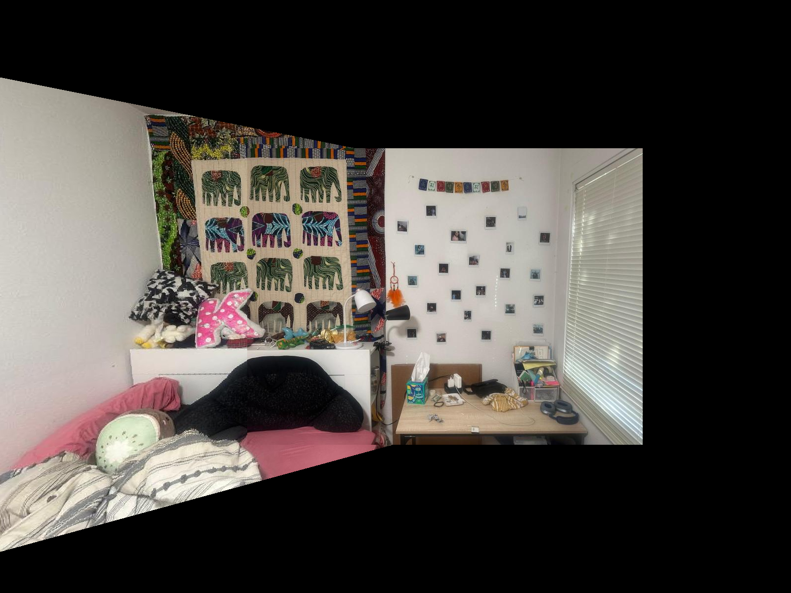
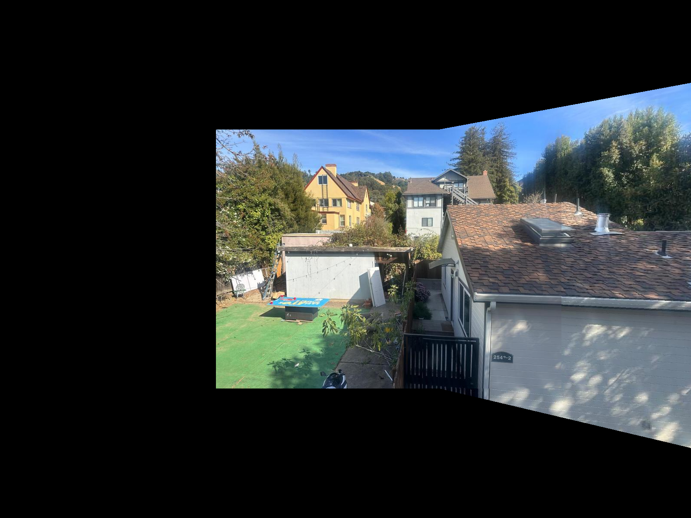
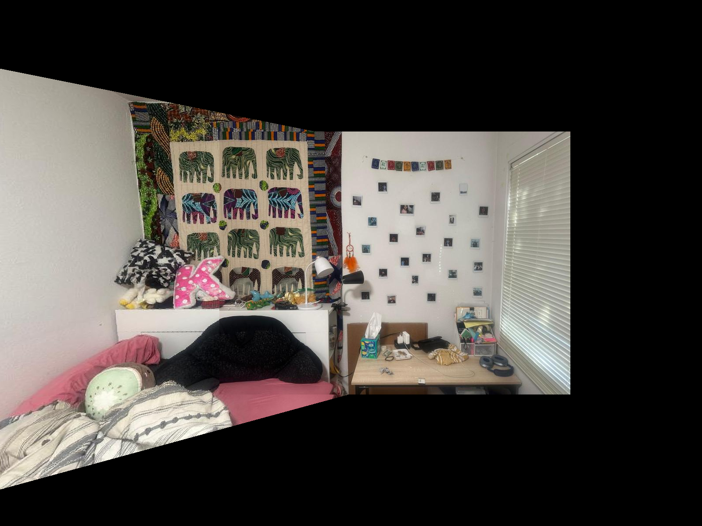
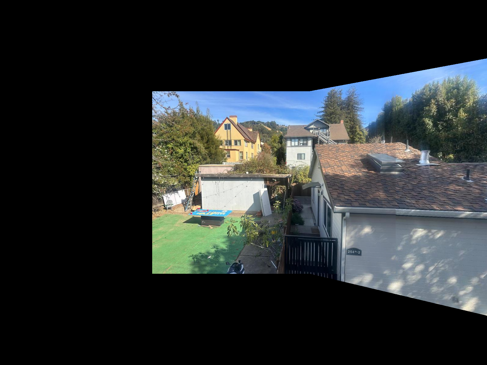
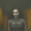
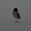

For this part, the model that was already given was used to sample different prompts with different num_inference steps. The results are shown below. The first row uses 5 steps, while the second and third use 20 and 40 respectively. The quality of images increases significantly as the inference steps go up, and details are more and more refined.
The warp function warps an input image using the specified homography matrix defined above. It creates a grid of coordinates covering the image dimensions and transforms these grid coordinates according to the homography matrix. Transformed pixel values are extracted from the input image and the final image is made by interpolating these pixel values over the new coordinate grid using linear interpolation.


The images shown below confirm that the warping function works. As before, the point correspondences were defined uskng the online tool and one of the paintings in the image was matched with a corresponding rectangle. Since the rectangles are correctly warped, we can move on to creating the mosaic


This function blends two images of the same dimensions to create a seamless transition between them. It does so by: 1. Converts both images to grayscale to create masks that identify non-zero regions to create the mask 2. Then it identifies overlapping regions where both masks are true 3. I used distance transforms to calculate weights for each image based on proximity to edges. The weights are then adjusted in overlapping regions to balance contributions from both images 4. Applies calculated weights to blend the images, ensuring smooth transitions in overlapping areas.
 



First, all corners in the image are detected using the Harris corner detection algorithm, and the scores h for each pixel are retrieved with get_harris_corners(). The detected corner coordinates are stored in coords. To prevent detecting corners too close to the edges, any points within a set edge_discard distance are removed, ensuring the selected corners are well within the image boundaries. The function dist2() is then used to calculate pairwise distances between detected corners. This distance matrix enables further filtering of corners by proximity, ensuring an even spread across the image if required. Finally, visualize_corners() overlays the detected corners on the original image, displaying each corner as a red dot.
This code performs corner detection on two images using the Harris Corner Detection algorithm, then refines the detected corners with Adaptive Non-Maximal Suppression (ANMS) to retain the strongest and most spatially spread-out points.
The get_harris_corners() function detects potential corners and assigns a score to each, indicating the corner strength.
adaptive_non_maximal_suppression() filters these corners. Pairwise distances between corner points are calculated, and only the most prominent corners with a wide spatial distribution are retained by setting a minimum radius for each point, using a comparison threshold (c_robust).
The visualize_corners() function overlays the final selected corners on the original images as red dots, clearly marking the detected corner points.


This code extracts feature descriptors from selected corner points in two images, representing unique patches around each corner. It then visualizes a subset of these feature patches.
The extract_feature_descriptors() function takes a 40x40 pixel patch around each corner, resizes it to 8x8, normalizes it by subtracting the mean and dividing by the standard deviation, and then flattens it. This results in an array of feature descriptors.
The display_feature_patches() function displays the first few feature patches in a grid, representing local features around corners.


The provided functions compute feature matches between two sets of feature descriptors derived from images, utilizing a method based on the distance between feature vectors. The compute_feature_matches() function calculates the squared differences between each pair of features from two images, generating a distance matrix. It then applies Lowe's ratio test to filter out matches, retaining only those where the nearest neighbor is significantly closer than the second nearest. The draw_matches() function visualizes these matches by resizing and combining the two images side by side, drawing lines between matched keypoints to illustrate correspondences. The resulting plot provides a clear representation of how features from the two images align with each other.
The provided functions implement a robust method for estimating the homography between two sets of matched keypoints using RANSAC (Random Sample Consensus). The compute_homography() function calculates the homography matrix based on four corresponding points, while ransac_homography() iteratively samples random point pairs, computes their homography, and identifies inliers based on a distance threshold. This process aims to minimize the influence of outliers in the matching process.
 For the autostitching, the method is the same as in part A, except that the homographies are now calculated using RANSAC. From the below images, you can see that the autostitched mosaics are slightly worse than the manual ones. This is probably because for the manual process the correspondences were chosen by hand, and probably more accurate in feature matching than the algorithm. The first images in the image pairs are the autostitched ones and the second images are the manually stitched mosaics.

The most interesting thing I learnt from this was that there needs to be a good balance between automating the process and finding the best correspondences. For the manual images, the correspondences are better, since theyre selected by hand (I can match eye to eye etc...). However, the autostitched method is faster, but leaves it up to the algorithm to pick up matching features. I have taken some inspiration from ChatGPT and pretrained LLM's to create the structure for some parts of the website.
Back to Main Page